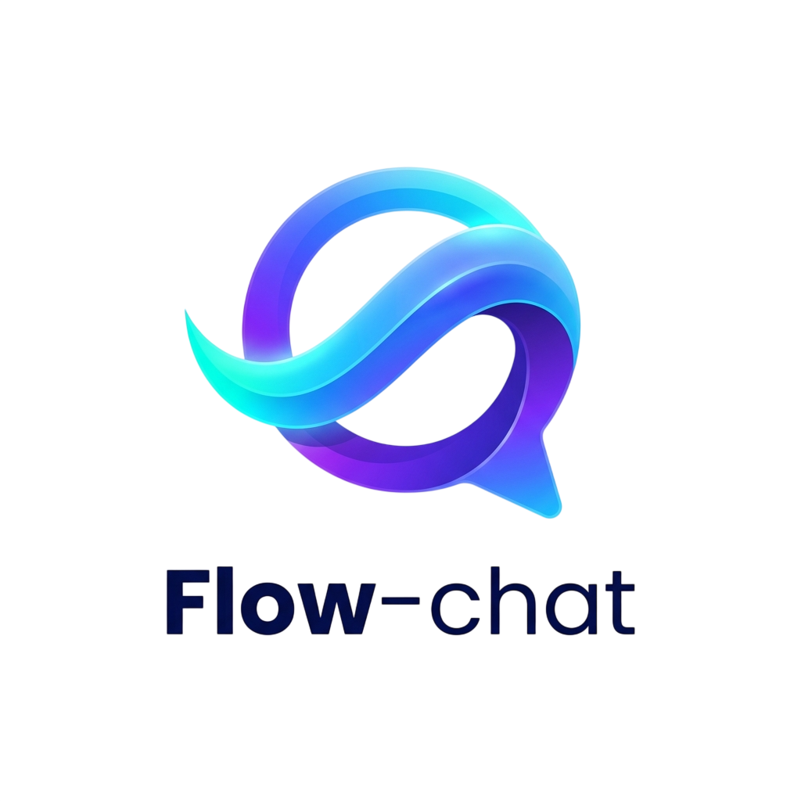

Servidor Backend para
App Flow Chat
Flow Chat reinventa la experiencia de mensajería. Rendimiento nativo, comunicación en tiempo real fluida vía WebSockets, y aislamiento estricto de proyectos.
¿Por qué elegir Flow Chat?
Diseñado para resolver los problemas de la comunicación moderna con un enfoque centrado totalmente en la experiencia de desarrolladores y usuarios finales.
Mensajería Continua
Comunicación ultra-rápida. Backend optimizado para procesar miles de eventos, ideal para probar flujos de comunicación masiva en tiempo real.
Rendimiento Nativo
App cliente construida en Flutter conectada a este motor, garantizando una respuesta instantánea y una experiencia de usuario fluida.
Persistencia NoSQL
Integración con MongoDB para un almacenamiento flexible y escalable, permitiendo una gestión de datos eficiente y veloz.
Pruebas Real-Time
Proyecto diseñado específicamente como un laboratorio para experimentar y perfeccionar la comunicación via WebSockets.
Ecosistema Tecnológico
Diferenciando el motor del servidor de la experiencia móvil nativa.
Motor del Servidor (Backend)
 Node.js
Node.js
 Socket.io
Socket.io
 Express
Express
 MongoDB Atlas
MongoDB Atlas
Aplicación Cliente (Mobile)
 Flutter SDK
Flutter SDK
 Dart Language
Dart Language
Diseño conceptual inspirado en Figma con una interfaz de mensajería (Inbox) que toma como referencia la fluidez de Instagram.
Cómo instalar la App y el Backend
Clona y enciende este entorno en tu máquina rápida y fácilmente.
# Clonar el servidor
git clone https://github.com/Fabian-Lugo/Backend-Flow-Chat.git
# Instalar dependencias
cd Backend-Flow-Chat
npm install
# Iniciar servidor
npm run start:devCon el servidor arriba, clona la app cliente para visualizar los chats.
# Clonar repositorio
git clone https://github.com/Fabian-Lugo/App-Flow-Chat.git
# Obtener dependencias
flutter pub get
# Ejecutar la app
flutter run